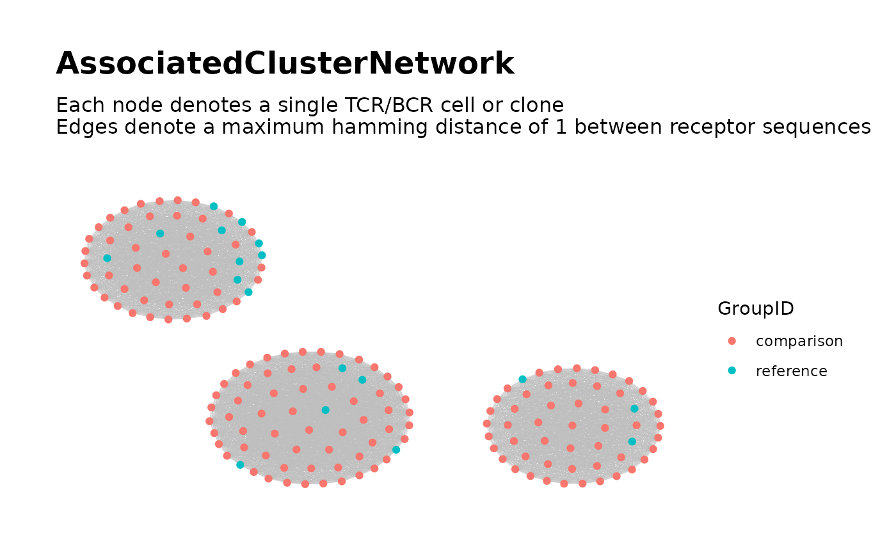

Build Global Network of Associated TCR/BCR Clusters
buildAssociatedClusterNetwork.RdPart of the workflow
Searching for Associated TCR/BCR Clusters.
Intended for use following
findAssociatedClones().
Given data containing a neighborhood of similar clones around each associated sequence, combines the data into a global network and performs network analysis and cluster analysis.
Usage
buildAssociatedClusterNetwork(
file_list,
input_type = "rds",
data_symbols = "data", header = TRUE, sep,
read.args = list(row.names = 1),
seq_col,
min_seq_length = NULL,
drop_matches = NULL,
drop_isolated_nodes = FALSE,
node_stats = TRUE,
stats_to_include =
chooseNodeStats(cluster_id = TRUE),
cluster_stats = TRUE,
color_nodes_by = "GroupID",
output_name = "AssociatedClusterNetwork",
verbose = FALSE,
...
)Arguments
- file_list
A character vector of file paths, or a list containing
connectionsand file paths. Each element corresponds to a single file containing the data for a single sample. Passed toloadDataFromFileList().- input_type
A character string specifying the file format of the neighborhood data files. Options are
"table","txt","tsv","csv","rds"and"rda". Passed toloadDataFromFileList().- data_symbols
Used when
input_type = "rda". Specifies the name of each neighborhood's data frame within its respective Rdata file. Passed toloadDataFromFileList().- header
For values of
input_typeother than"rds"and"rda", this argument is used to specify the value of theheaderargument toread.table(),read.csv(), etc.- sep
For values of
input_typeother than"rds"and"rda", this argument can be used to specify a non-default value of thesepargument toread.table(),read.csv(), etc.- read.args
For values of
input_typeother than"rds"and"rda", this argument is used to specify values of optional arguments toread.table(),read.csv(), etc. Accepts a named list of argument values. Values ofheaderandsepin this list take precedence over values specified via theheaderandseparguments.- seq_col
Specifies the column of each neighborhood's data frame containing the TCR/BCR sequences. Accepts a character string containing the column name or a numeric scalar containing the column index.
- min_seq_length
Passed to
buildRepSeqNetwork()when constructing the global network.- drop_matches
Passed to
buildRepSeqNetwork()when constructing the global network.- drop_isolated_nodes
Passed to
buildRepSeqNetwork()when constructing the global network.- node_stats
Passed to
buildRepSeqNetwork()when constructing the global network.- stats_to_include
Passed to
buildRepSeqNetwork()when constructing the global network.- cluster_stats
Passed to
buildRepSeqNetwork()when constructing the global network.- color_nodes_by
Passed to
buildRepSeqNetwork()when constructing the global network.- output_name
Passed to
buildRepSeqNetwork()when constructing the global network.- verbose
Logical. If
TRUE, generates messages about the tasks performed and their progress, as well as relevant properties of intermediate outputs. Messages are sent tostderr().- ...
Other arguments to
buildRepSeqNetwork()when constructing the global network.
Details
Each associated sequence's neighborhood contains clones (from all samples)
with TCR/BCR sequences similar to the associated sequence. The neighborhoods
are assumed to have been previously identified using
findAssociatedClones().
The neighborhood data for all associated sequences are used to construct a single global network. Cluster analysis is used to partition the global network into clusters, which are considered as the associated TCR/BCR clusters. Network properties for the nodes and clusters are computed and returned as metadata. A plot of the global network graph is produced, with the nodes colored according to the binary variable of interest.
See the Searching for Associated TCR/BCR Clusters article on the package website for more details.
Value
A list of network objects as returned by
buildRepSeqNetwork().
The list is returned invisibly.
If the input data contains a combined total of fewer than two rows, or if the
global network contains no nodes, then the function returns NULL,
invisibly, with a warning.
References
Hai Yang, Jason Cham, Brian Neal, Zenghua Fan, Tao He and Li Zhang. (2023). NAIR: Network Analysis of Immune Repertoire. Frontiers in Immunology, vol. 14. doi: 10.3389/fimmu.2023.1181825
Searching for Associated TCR/BCR Clusters article on package website
Author
Brian Neal (Brian.Neal@ucsf.edu)
Examples
set.seed(42)
## Simulate 30 samples from two groups (treatment/control) ##
n_control <- n_treatment <- 15
n_samples <- n_control + n_treatment
sample_size <- 30 # (seqs per sample)
base_seqs <- # first five are associated with treatment
c("CASSGAYEQYF", "CSVDLGKGNNEQFF", "CASSIEGQLSTDTQYF",
"CASSEEGQLSTDTQYF", "CASSPEGQLSTDTQYF",
"RASSLAGNTEAFF", "CASSHRGTDTQYF", "CASDAGVFQPQHF")
# Relative generation probabilities by control/treatment group
pgen_c <- matrix(rep(c(rep(1, 5), rep(30, 3)), times = n_control),
nrow = n_control, byrow = TRUE)
pgen_t <- matrix(rep(c(1, 1, rep(1/3, 3), rep(2, 3)), times = n_treatment),
nrow = n_treatment, byrow = TRUE)
pgen <- rbind(pgen_c, pgen_t)
simulateToyData(
samples = n_samples,
sample_size = sample_size,
prefix_length = 1,
prefix_chars = c("", ""),
prefix_probs = cbind(rep(1, n_samples), rep(0, n_samples)),
affixes = base_seqs,
affix_probs = pgen,
num_edits = 0,
output_dir = tempdir(),
no_return = TRUE
)
#> [1] TRUE
## Step 1: Find Associated Sequences ##
sample_files <-
file.path(tempdir(),
paste0("Sample", 1:n_samples, ".rds")
)
group_labels <- c(rep("reference", n_control),
rep("comparison", n_treatment))
associated_seqs <-
findAssociatedSeqs(
file_list = sample_files,
input_type = "rds",
group_ids = group_labels,
seq_col = "CloneSeq",
min_seq_length = NULL,
drop_matches = NULL,
min_sample_membership = 0,
pval_cutoff = 0.1
)
head(associated_seqs[, 1:5])
#> ReceptorSeq fisher_pvalue shared_by_n_samples samples_g0 samples_g1
#> 8 CSVDLGKGNNEQFF 1.052106e-05 18 3 15
#> 7 CASSGAYEQYF 1.157316e-04 17 3 14
#> 4 CASSEEGQLSTDTQYF 5.197401e-03 10 1 9
#> 5 CASSIEGQLSTDTQYF 6.559548e-02 16 5 11
## Step 2: Find Associated Clones ##
dir_step2 <- tempfile()
findAssociatedClones(
file_list = sample_files,
input_type = "rds",
group_ids = group_labels,
seq_col = "CloneSeq",
assoc_seqs = associated_seqs$ReceptorSeq,
min_seq_length = NULL,
drop_matches = NULL,
output_dir = dir_step2
)
## Step 3: Global Network of Associated Clusters ##
associated_clusters <-
buildAssociatedClusterNetwork(
file_list = list.files(dir_step2,
full.names = TRUE
),
seq_col = "CloneSeq",
size_nodes_by = 1.5,
print_plots = TRUE
)
